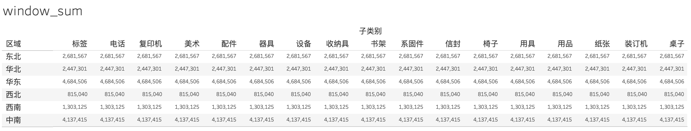

基础图表操作
1.拆分和合并字段
拆分字段：字段点击右键
合并字段：字段点击右键-创建-计算字段 （可拖拽）。显示“计算有效”后，点击完成后在数据源中查看
例如：[类别] + ‘-‘ + [子类别]
2.创建文件夹和分层结构
创建文件夹：字段点击右键-文件夹 （用于结构化管理字段）
分层结构：字段点击右键-分层结构-创建分层结构 （可用于维度下钻，注意有严格顺序）
例如：创建”分层结构”，将国家、省、城市依次加入分层结构，那么当选择国家为行时，出现+，可用于下钻
3.计算字段、组、集、参数、数据桶
计算字段：字段点击右键-创建-计算字段。显示“计算有效”后，点击完成后在数据源中查看。计算字段会在字段前显示有一个等号
sum([利润])/[销售额]
组：字段点击右键-创建-组（类似case when的分组作用）。选择字段，右键”添加到”或点击”分组”按钮，若已有分组，可直接选择”添加到”。组的标志为一个曲别针符号
集：字段点击右键-创建-集（集是指选定了一个范围，只分为集合内和集合外）。选择“顶部”，写入名称，在”按字段”中选择”顶部10”，点击”确定”后左侧工具栏中多了集（标志为链接）。
参数：上述集中，若TOPN的N不确定，可在10处选择为「创建新参数」，输入最小值/最大值/步长，点击”确定”后左侧工具栏中多了“参数”部分。参数可动态变化。
数据桶：数据桶是直方图或条形图的频数分割区间。选择度量为”行”，”智能推荐”选择”直方图”，此时”列”会自动创建数据桶（在左侧维度字段处也可以看到）。字段点击右键-编辑，”数据桶大小”即为组距。也可以通过：字段点击右键-创建-数据桶实现上述过程。
4.地理角色
字段点击右键-地理角色。例如：我们选择国家/地区，右键-地理角色-国家/地区，此时该字段标志变为地球。双击字段即可自动生成经纬度，呈现地图。
常见图表
1.条形图
将分类维度拖入“行”，将数值指标拖入”列”即可
例如：“类别”、”区域”拖入”行”，“销售额”拖入”列”
2.折线图/面积图
折线图：将数值指标拖入”行”，分类维度拖入”列”，标记选为”线”。若行有M个指标，则会分为M个图。若想在一个图里展示不同类别，则将相应的字段拖入”标记”-“颜色”中即可。
面积图：若希望为面积图，则标记选为”区域”即可。
例如：“销售额”、”利润”拖入”行”，“年”拖入”列”。若想进一步拆分年到月，则在拖入”列”中的指标点击下拉小三角，选择”月”即可。（这里有两个”月”，上面的表示按月聚合group by month，下面表示按年月聚合group by year,month）
3.散点图
相关指标拖到”行”和”列”，标记选为”形状”，这时只会显示一个点，此时将维度拖到”标记”-“详细信息”即可。若希望进行美化，在标记中进行选择即可。
例如：”销售额”拖入”行”、”利润”拖入”列”，”产品名称”拖入”详细信息”。美化：”标记”-“形状”选择散点的形状，”标记”-“颜色”调整透明度。
4.饼图
修改”标记”为”饼图”，饼图的数值字段拖入”标记”-“角度”，分类字段拖入”‘颜色”，标签字段拖入”标签”即可。
例如：“销售额”拖到”标记”-“角度”处，”类别”拖到”颜色”处，则会根据类别显示各自的销售额。
颜色优化：点击标记-颜色-编辑颜色，选择调色板后点击”分配调色板”，点击确定后生效。若想单独修改某个块的颜色，可在编辑颜色中，选择某个字段后，点击相应的颜色即可。
添加标签：将想显示的内容对应的字段拖入标记-标签中，例如：将”类别”字段拖入”标签”，通过拖拽调整标签的位置。点击标记-标签，可修改字体。若想得到计算字段，可将字段拖入后，通过标记-下拉小三角-快速表计算-百分比得到。若希望修改显示格式，可通过标记-下拉小三角-设置格式进行修改。
5.气泡图
将相应字段拖入行和列，选择”气泡图”即可。通常可用颜色、大小表示更多维度信息，将相应字段拖入标记-颜色/大小即可。
销售额拖入”行”，子类别拖入”列”，智能推荐选择”气泡图”即可。利润拖入”颜色”，则可同时了解销售额与利润的关系。
6.文字云
将文本字段拖入标记-文本，将表示文本大小的字段拖入标记-大小即可。可进一步通过标记-颜色增加更多维度信息。
子类别拖入”标记”-“文本”，销售额拖入”大小”，标记改为“文本”，利润拖入”颜色”。
7.树状图
将分类维度拖入”行”，数值型字段拖入”列”，智能推荐选择”树状图”。或分类维度拖入”标记”-“标签”，数值型字段拖入”标签”-“大小”
例如：子类别拖入”行”，销售额拖入”大小”，标记改为“文本”，利润拖入”颜色”。
8.热图
将分类维度拖入”行”，数值型字段拖入”列”，智能推荐选择”热图”。
例如：省/自治区拖入”行”，销售额拖入”列”，智能推荐选择”热图”（相当于把销售额拖入”标记”-“大小”）。
9.凸显表
将分类维度拖入”行”，数值型字段拖入显示的”列”中（此时为普通表），智能推荐选择”凸显表”。在右侧的控件中可进行颜色的选择。
例如：省/自治区拖入”行”，销售额拖入表中，智能推荐选择”凸显表”。
高阶图表操作
1.嵌套条形图
嵌套条形图即两个维度相同的条形图，显示在相同位置。
将分类维度拖入”行”，数值型字段（多个）拖入”列”。在最后一个分类维度字段上点击右键，下拉菜单中选择”双轴”（此时图表类型可能会自动变为其他），在”标记处”改回”条形图”类型。在左侧轴右键，选择”同步轴”，则左右两个坐标轴的范围一致，此时再右侧轴右键，去掉勾选“显示标题”，则变为只显示一个轴。
例如：为了对比2020年和2021年的销售额，先创建计算字段：
IF YEAR([订单日期])=2020 then [销售额] end
IF YEAR([订单日期])=2021 then [销售额] end
后续过程与上述介绍一致
2.子弹图
子弹图通常用于表示「预估值」与「完成值」之间的差异。
将分类维度拖入”行”，数值型字段（完成值）拖入”列”。数值型字段（预估值）拖入”标记”-“详细信息”。点击左侧”分析tab”，选择”自定义”-“参考线”（也可以在图表中右击选择”添加参考线”），拖入”单元格”。在跳出的编辑窗口内，”线”-“值”选择为预估值的字段，选择”最大值”。
若希望比较的是各分位区间的值，可在图表右键，选择”添加参考线”，顶部选择”分布”，选择”每单元格”，”计算”-“值”选择百分位，输入百分位数字，字段选择为预估值的字段，”计算”-“标签”选择为”无”，格式勾选”向上填充”和”向下填充”，颜色选择”停止指示灯”。
如果希望对「已完成」和「未完成」的图进行区分，那么可以创建字段”是否完成”，再将该字段拖入”标记”-“颜色”即可。
例如：为了对比实际销售额与预估销售额之间的关系，将”产品类别”、”产品名称”拖入”行”，”销售额”拖入”列”。预估销售额拖入”标记”-“详细信息”。后续操作与上述介绍一致。
其中，用于区分「已完成」和「未完成」的公式可以输入：sum([销售额]) >= sum([预估销售额 ])
3.瀑布图
将分类维度拖入”列”，数值型字段拖入”行”，点击数值型字段右侧小三角，选择”快速表计算”，选择”汇总”。”标记”选择”甘特条形图”，创建相关字段后再次拖入”标记”-“大小”。
例如：为了反映子类别和利润的大小关系（累计利润/单项利润），将”子类别拖入”列”，利润拖入”行”。点击利润字段右侧小三角，选择”快速表计算”，选择”汇总”（此时成为汇总情况）。创建计算字段：负利润，输入公式：-[利润]，将”负利润”字段拖入”标记”-“大小”。
还可以增加累计利润的值，顶部菜单选择”分析”，”合计”-“显示行总和”
为了显示利润的正负，可将”负利润”字段拖入”标记”-“颜色”
4.箱线图（盒须图）
统计学上度量数据离散型的指标有以下5种：
1.全距（极差）：最大值-最小值，反映数据段的离散程度。全距受到异常值影响非常大，所以需要引入四分位数。
2.四分位数：指的是将数据分成4等分的3个数值，最大的四分位数被称为上四分位数，最小的四分位数被称为下四分位数，中间的四分位数就是中位数。
四分位距（IQR）：四分位距=上四分位数Q3-下四分位数Q1（由于四分位距只用了中心部分50%的数据，所以能剔除异常值）。
异常值：Q3+1.5IQR和Q1－1.5IQR，这两条线段为异常值截断点，称其为内限，也就是箱线图上下两个边界。
3.百分位数：与四分位数的原理相同，不过此时数据被划分为100等份，四分位数也是百分位数的一种
以下2个指标与箱线图无关，作为离散类指标的扩展内容：
4.方差：方差是每一个样本和均值之间的距离的平方之和，我们通常用方差度量变异性。但由于方差是距离的平方，因此并不值观。
5.标准差：由于方差不具有解释性，我们对方差进行修正得到标准差，即对方差开平方得到标准差。标准差的另一个重要用途为：标准分。标准分提供了一种不同数据集之间进行比较的方法，通过标准分将其化为标准正态分布。
将数值型字段拖入”行”，单元维度字段拖入”标记”-“详细信息”，此时，每一条记录都是一个点。智能推荐选择”盒须图”。
若想进一步分类，可将分类维度拖入”列”。
例如：将销售额拖入”行”，客户名称拖入”标记”-“详细信息”，智能推荐选择”盒须图”，”区域”拖入”列”。
5.环形图
Tableau中其实并没有环形图这一图表类型，但我们可以通过构造两个饼图来模拟环形图。
在左侧数据集中同时选中维度字段和数值型字段，在”智能推荐”里选择”饼图”。任意选择另外一个字段（以下称为”辅助字段”），拖入”行”，此时饼图会被拆成多个子图。在辅助字段右侧小三角下拉菜单中”度量(总和)”选择”计数(不同)”，饼图恢复。
复制辅助字段到”行”，此时”行”有两个辅助字段，饼图会有两个。在第二个（右侧）辅助字段右侧小三角下拉菜单中，选择”双轴”（此时恢复为一个饼图，但具有左右两个坐标轴，此方式为两个图合并为一个图的通用操作方法），若左右两侧坐标轴不相同，可右击坐标轴，选择”同步轴”。
此时”标记”栏中有两个饼图，在第二个饼图中，将所有字段（维度字段和数值型字段）拖回，修改大小即可。
例如：同时选择”细分”和”销售额”，智能推荐选择”饼图”，”区域”拖入”列”。选择”数量”拖入”行”，在字段下拉菜单中”度量(总和)”选择”计数(不同)”。后续操作与上述介绍一致。
6.帕累托图
将分类维度拖入”列”，数值型字段拖入显示的”行”中，在顶部菜单栏选择降序排序。创建计算字段。后续操作步骤较为复杂，可参见下述例子。
例如：为了验证是否由20%的头部用户贡献了80%的价值，将”利润”拖入”行”。创建计算字段”获客数量累计占比”，index()/size()，点击默认表计算，计算定义选择”客户Id”。将”获客数量累计占比”拖入”列”，客户id拖入”标记”-“详细信息”，在”标记”中的”客户Id”字段点击下三角，点击”排序”，排序依据选择”字段”，排序顺序选择”降序”，字段名称选择”利润”，聚合保持默认”总和”。”标记”选择区域图。
为了让Y轴也显示为百分比，在”行”的”利润”字段点击下三角，点击”添加表计算”，计算类型选择”汇总”，计算依据选择”特定维度”，勾选”客户Id”。勾选”添加辅助计算”，从属计算类型选择”合计百分比”，计算依据选择”特定维度”，勾选”客户Id”。
为了更好地展示20%与80%的关系，点击左侧”分析tab”，选择”汇总”-“常量线”拖入”获客数量累计占比”，输入0.2。再选择”汇总”-“常量线”拖入”利润”，输入0.8即可。
7.动态图
动态图是分页实现的。
将动态变化的维度拖入”列”，数值型指标拖入”行”，复制”列”中的维度，拖入”页面”。此时可在右侧页面控件中选择具体页面或播放。播放的设置如下图：左侧三个按钮分别为：向后播放、停止播放、向前播放。右侧三个按钮分别表示播放速率由慢到快。若希望播放时显示历史点轨迹，可点击”显示历史记录”，点击”全部”等。
例如：为了对比近几年公司的销量和利润情况，将”订单日期(月)”拖入”列”，”销售额”和”利润”拖入”行”，此时形成了上下两个图形，可用于观测销售和利润随着时间的推移二者的关系和走向。
8.雷达图
添加雷达图背景：
雷达图的背景是需要人工添加图片的。顶部菜单-地图-背景图像，选择当前数据源。点击”添加图像”，选择雷达图背景，设置X字段和Y字段
雷达图绘制：
创建字段（angle, 角度）：
1 | RUNNING_SUM(2*PI()/Indicator_Numbers)+PI()/2 |
创建字段（distance from center, 每个指标到中心的距离）：
1 | AVG([字段]) |
创建字段（X, 绘制到雷达图上的位置）：
1 | [distance from center]*COS([angle]) |
创建字段（Y, 绘制到雷达图上的位置）：
1 | [distance from center]*SIN([angle]) |
X拖到”列”，计算依据选择”Indicator”，Y拖到”行”，计算依据选择”Indicator”。”标记”选择”多边形”，字段Indicator拖入”标记”-“详细信息”，点击右侧小三角下拉菜单，点击”排序”，选择”降序”。字段”angle”拖入”标记”-“路径”。
添加顶部圆点：在”列”中复制X字段，在复制的字段中点击右侧按钮，选择”双轴”，”标记”中第二个X选择”圆”即可。
基础函数
计算函数：ABS、SQRT、square
字符串函数：contains、startswith、endswith、find、left、mid、right、len、lower、upper
日期函数：isdate、dateadd、datediff、year、month、day、now、today
聚合函数：count、countd(distinct)、sum、avg、median、max、min
逻辑句式：if…then…elseif…then..else…end、case…when…then…else…end
表计算函数：index、size、rank、running类函数、window类函数
累计占比：index()/size()，通常结合默认表计算中的”计算定义”进行使用
延伸知识：sum、running_sum、window_sum、total这四种方式的差别？
sum(exp)：单元格累计
返回表达式中所有值的总计。
running_sum(exp)：逐行/列累计
返回给定表达式从分区中第一行到当前行的运行总计（可通过修改计算依据来修改行的定义方式），下图显示的结果为：以表(横穿)计算结果。
注：可通过修改running_sum字段的”计算依据”来修改累计的方式，包括表(横穿)、表(向下)、表(横穿,然后向下)、表(向下,然后横穿)、单元格等，与具体的行列字段有关
window_sum(exp,first,last)：窗口累计
返回窗口中表达式的总计。窗口用与当前行的偏移定义，使用first()+n和last()-n表示与分区中第一行或最后一行的偏移。

total(exp)：窗口累计
返回给定表达式的总计。相当于window_sum(exp,first(),last())，但由于只有一个参数没有window_sum灵活。
详细级别表达式/LOD
我们可通过改变列、行的字段设置数据的粒度，高聚合度意味着低颗粒度，即LOD（Level Of Detail）表达式。
FIXED可用于固定数据的最小颗粒度。当数据的颗粒度高于设置的FIXED粒度时，会正常显示数据；当低于设置的FIXED粒度时，显示FIXED粒度数据。
1 | FIXED ([dim1 [, dim2] ... ]) 仅使用指定的维度计算聚合 |
附录
数据集：Tableau自带数据集 Sample - China Superstore
内容来源：
1.网易云课堂 - Tableau数据分析
2.微信公众号 - 数据分析且徐行